Opening it and looking around
Open the garden. It starts at once on the starting garden: three groups of six neurons (L5, spiny layer 5 cells; L23, spiny layer 2/3 cells; PV, aspiny Pvalb interneurons), wired by five connections, with a little background input from the rest of a brain the garden does not simulate. Each neuron grows its own tree of dendrites from a group of real mouse reconstructions, and its membrane carries ion channels taken from published recordings. What you see is the simulation as it runs: by default the cell bodies and dendrites are coloured by their voltage, and a spike lights its axon as it travels.
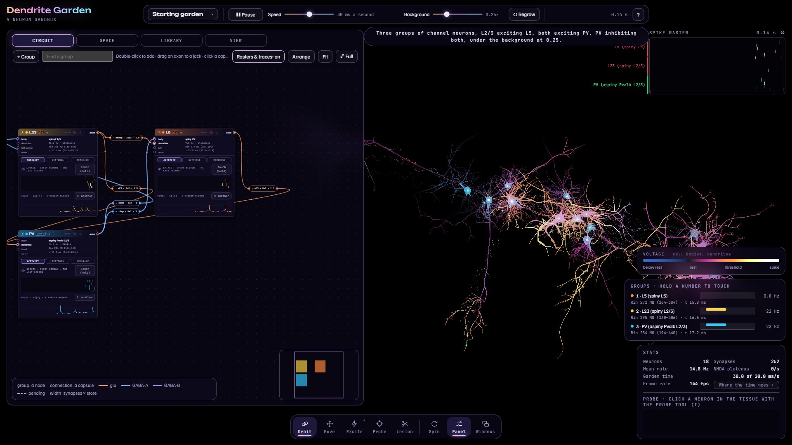
Moving around the tissue
- Drag in the tissue to turn it, right-drag to pan, and scroll to zoom.
- H hides the panel and the windows, leaving the tissue, the run strip and the dock; H again brings them back.
- The dock's Panel button shows or hides the panel. Its Windows button chooses which windows show: the spike raster (spikes from a sample of neurons, newest on the right), the group bars (each group's firing rate), the colour key, Stats (neurons, synapses, the mean rate, how fast the garden runs) and the Probe trace.
What a browser needs
The garden runs its neurons on the graphics card, through WebGPU. As of November 2026 it has run in Microsoft Edge 157 and Firefox 148 on Windows 11 with an NVIDIA GeForce RTX 3060; other browsers and graphics cards have not been tried. Where a browser has no WebGPU, or a graphics card cannot give the page what it needs, the page says so instead of starting.
The run strip and the garden menu
- Pause stops the garden's time; you can still look, probe and change things. Pressed again, it runs. (Space does the same.)
- Speed sets how much garden time passes each second of yours, shown beside it (it opens at 30 ms a second). Slow it down to watch a spike leave the axon.
- Background sets how much input each neuron gets from the rest of a brain the garden does not simulate: none at 0, each neuron's full background at 1. It opens at 0.25.
- Regrow grows the whole garden again from its settings at a new seed: new trees and new wiring, every change you made kept.
- The clock shows the garden's time. The ? lists the keys when you point at it, and opens this manual when you click it.
The garden menu
Click the garden's name at the left of the run strip. The menu offers the Starting garden; the same three groups, unwired; 10,000 neurons in 20 groups; the Cortex patch (see below); and Empty, to build your own. Below them are Save to a file… and Load from a file… (see Saving and loading). Esc closes the menu.
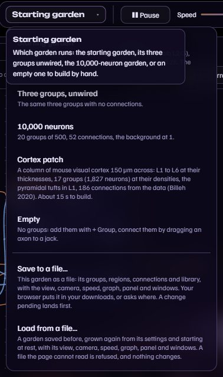
A group: adding one, its settings, its membrane
The panel's Circuit tab is a graph of the garden: each group is a node, each connection a capsule on a wire between two nodes. A node shows the group's number key, its name, its transmitter, its neuron count, its morphology, its firing rate, and its input resistance and time constant (measured on its own neurons). Its buttons mute the group, clone it (⧉) or remove it (✕). On its left are its jacks, where connections land (body, dendrites, tuft where its trees have one, band); on its right, its axon.
Adding a group
- Click + Group above the graph (or double-click an empty part of the graph).
- Pick a morphology from the menu: twenty groups of mouse reconstructions, by layer, each listed with the transmitter a new group of it starts with (glutamate for the spiny ones, GABA-A or GABA-B for the aspiny ones). The new group starts with six neurons. It appears as a node, and its neurons in the tissue beside the garden, once the change lands. Its transmitter is its own setting, which its Settings tab changes.
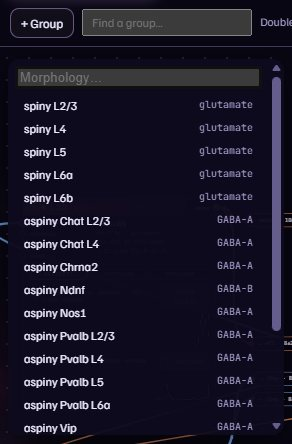
A change that takes longer than a frame (the neurons grown again, or the garden laid out again) is pending until it lands between two steps, and the run strip counts what is pending. The marks beside each setting say which it is: ● lands within a frame, ◐ the neurons recomputed, ◆ structural.
Its settings
A node has three tabs: Activity (its spikes over the last second and one neuron's trace), Settings and Membrane. Settings holds the group's morphology, transmitter and number of Neurons; its trees' Tree size, Branch thickness and Branch complexity; its NMDA share; its background (excitatory and inhibitory rates, excitatory volley); and its place (its region, its trunks' direction and lean, the layer its tufts reach). Each dial has a centre and a spread (±): each neuron draws its own value from them.
- Open the node's Settings tab.
- Type a number into Neurons (here 10), or move a dial's slider, such as Tree size.
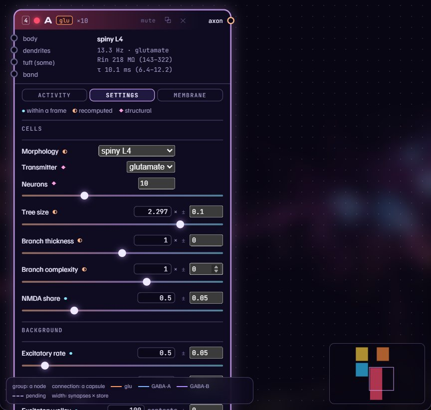
Its membrane
Membrane is a table of the group's zones (soma, axon start, basal, apical and tuft dendrites) against its leak, each channel type in the library and, where the library holds calcium, the calcium's buffers, pumps and stores. Click a cell to edit it below the table: a channel's Amount and its Profile with distance from the soma, or the leak's conductance and reversal. Under it, the Gates grid shifts each gate's curve and changes its speed, for this group alone.
- Open the node's Membrane tab.
- Click a cell, here sodium at the soma, and move its Amount.
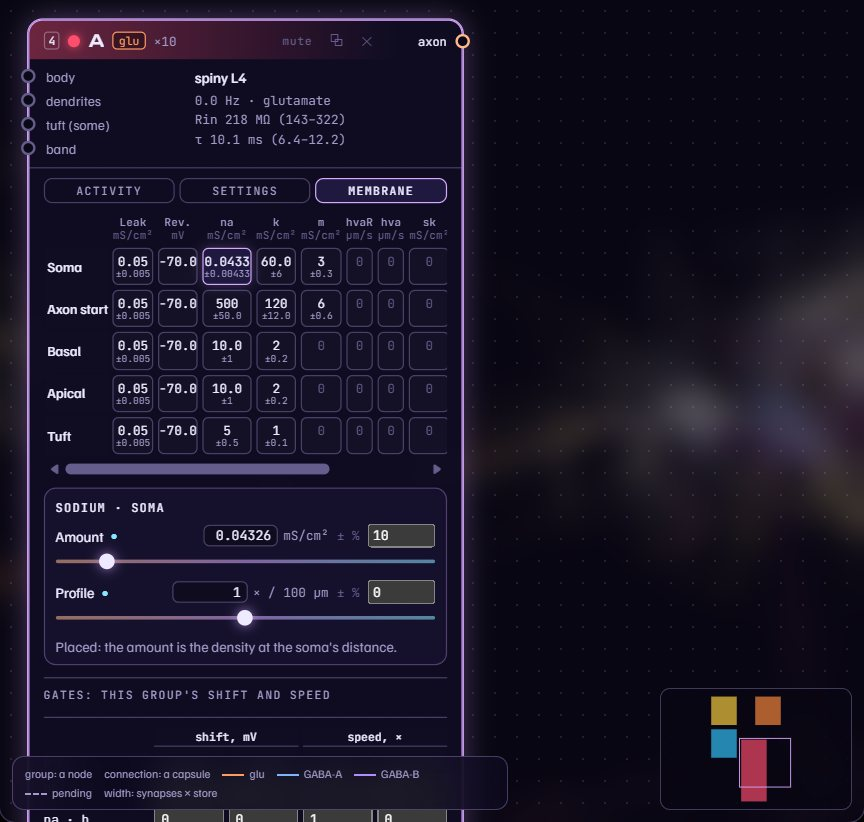
A connection and its card
- Drag from a node's axon (its right edge) to a jack of another node: body, dendrites, tuft or band. That is where the connection's synapses land. Here, the new group's axon to L5's dendrites.
- Click the connection's capsule on its wire to open its card.
- Change what you need: Lands on, Synapses (each receiving neuron's count, here 12), Store (each synapse's strength), Dynamics (its short-term plasticity, from a table of measured synapse classes), NMDA share, Fibre speed and Route (each axon on its own, or bundled in a tract).
The card's ⧉ clones the connection and ✕ removes it.
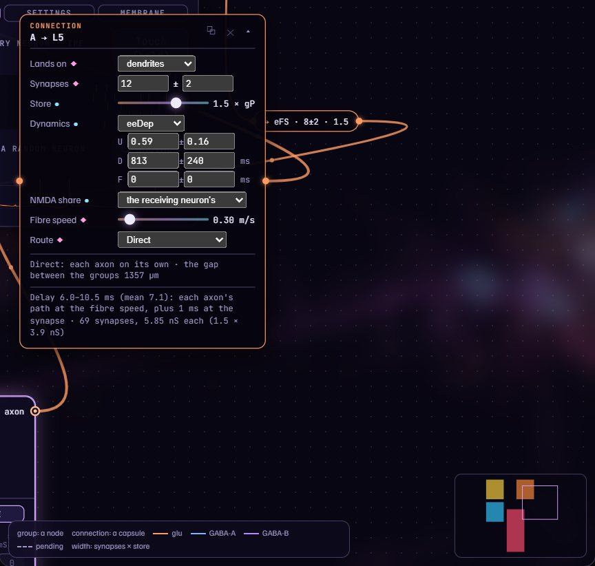
The Library
The Library tab holds the garden's channel types, grouped by ion: sodium; the slow potassium, the M-current and SK; and two high-voltage-activated calcium types. Click a type to open it in the editor: its name, ion, reversal and source; the temperature its numbers were measured at and its Q10; and its gates, each in one of a few standard forms. + New, Duplicate and Remove add and remove types; a type is used by a group once the group's Membrane gives it an amount.
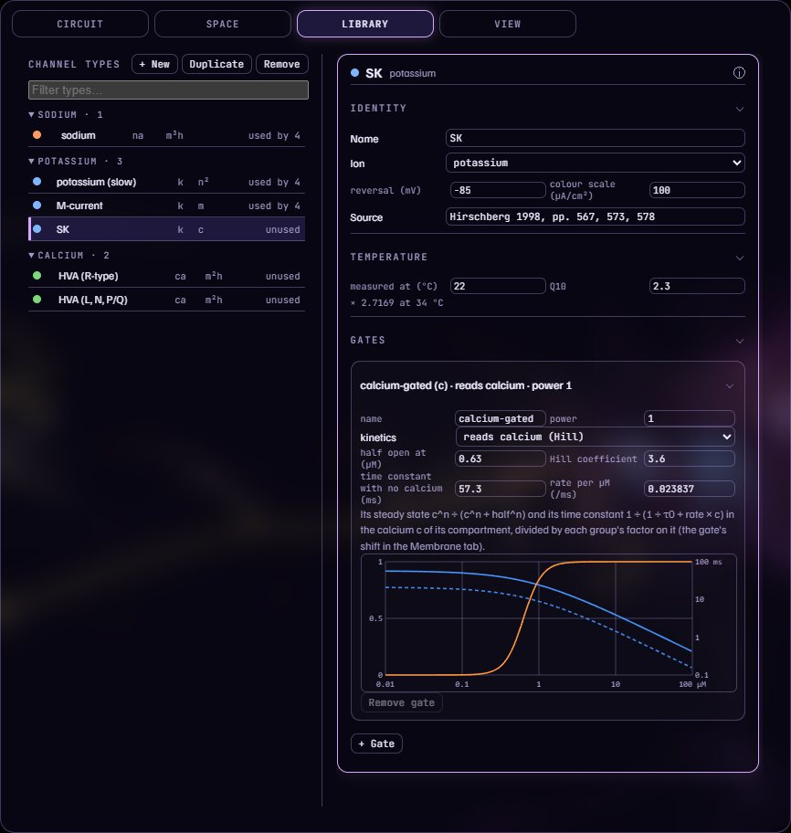
The View
The View tab changes how the garden is drawn, never what it computes. Scene has the brightness, bloom and trails. Colour chooses what colours each part: the chips at the top (Voltage, Groups, Inhibition, Garden) set every part at once, and each part's own menu sets it alone (the dendrites, for instance, by Ions, the currents flowing through them, or by a Channels type's current). Groups drawn hides or shows a group, Parts each part (dendrites, axons, tracts, cell bodies, synapses, spikes, inhibition), and Camera sets the spin.
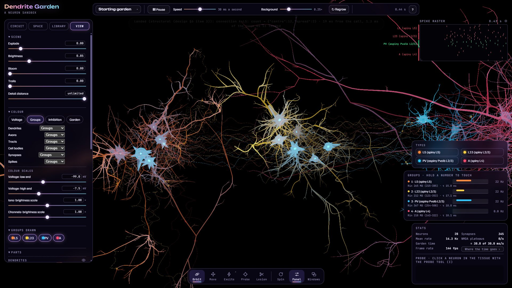
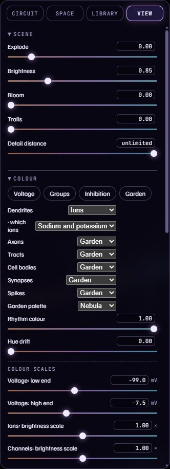
Space and Move
Every group sits in a region of tissue: a ball, shells, a slab, a column, a band, a cord or a ring, cut into layers along its axis. The Space tab lists the regions with their groups. Click a region to open it: its name, shape, place (x, y, z in µm), turn and size are typed in; its side view below shows its layers and each group's range, whose lines and ends can be dragged; its table of layers takes names and thicknesses. Here the new group's region is opened and its x typed 120 µm further on.
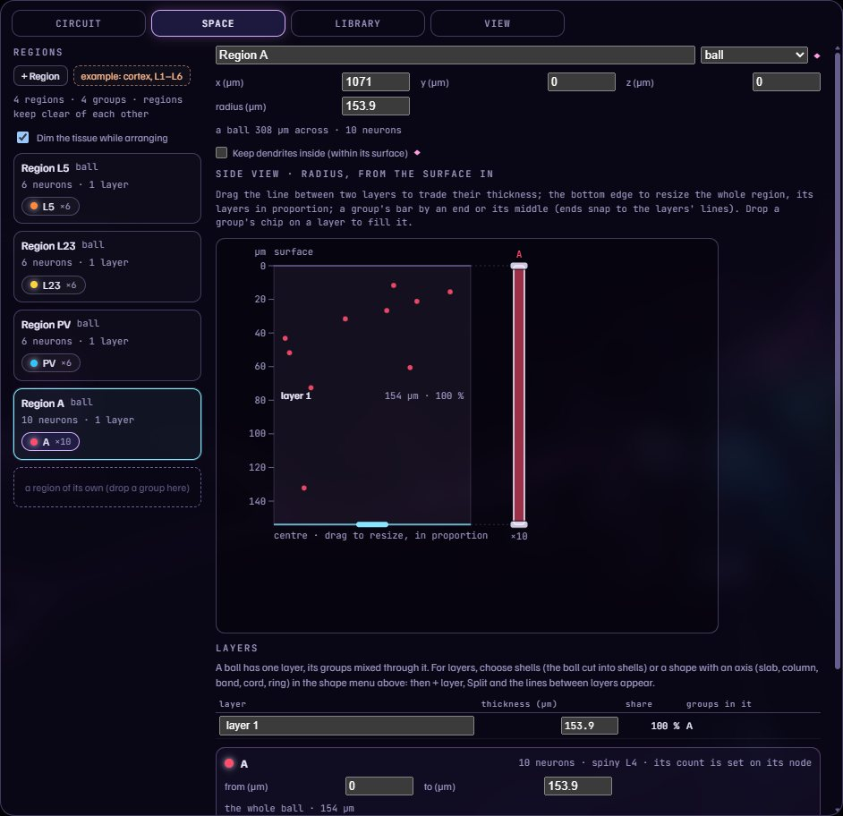
Move
- Choose Move in the dock (M).
- Click a neuron: its region is picked, and handles appear at its centre: arrows along x, y and z, squares for the planes and, for a shape with an axis, rings that turn it.
- Drag a handle. While you drag, the outline and the cell bodies show where the region would stand; let go to move it there. O or Esc goes back to Orbit.
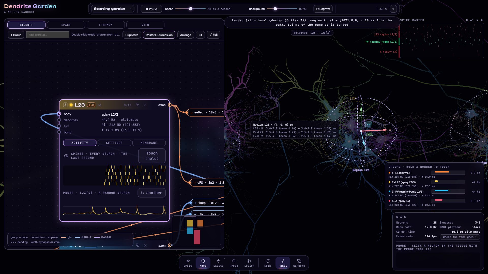
Touching, brushing, probing and lesioning
- Touch: hold a number key, 1 to 9, to drive the group with that number on its node (the groups in the order they were added) for as long as you hold it; several can be held at once. A node's Touch (hold) button in its Activity tab does the same while you hold it.
- Brush: choose Excite in the dock (S), then hold and drag over the tissue to paint input onto the dendrites under the brush. Hold the button (or right-click it) for the brush's options: Excite or Inhibit, its size, strength and depth.
- Probe: choose Probe (I) and click a neuron. The Probe window then records its voltage.
- Lesion: choose Lesion (L) and click a neuron to silence it; click it again to revive it.
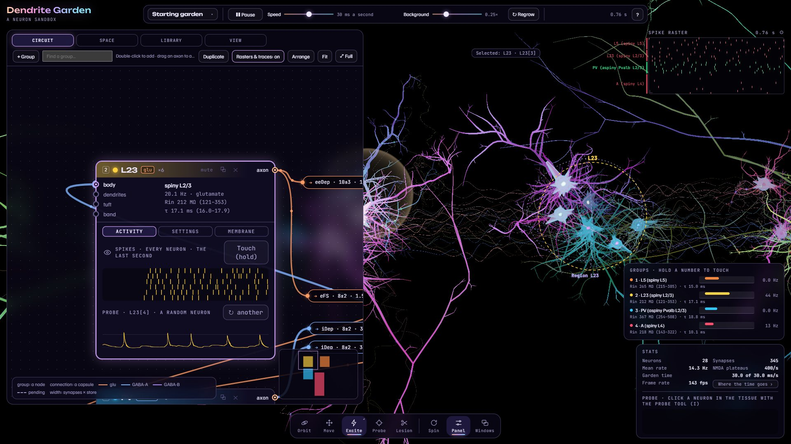
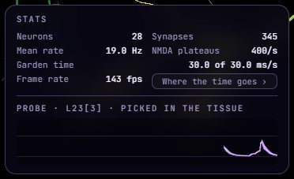
Saving and loading
- In the garden menu, Save to a file… saves the garden as a file in your downloads: its groups, regions, connections and library, with the view, camera, speed, graph, panel and windows.
- Load from a file… opens a saved garden: it is grown again from its settings, starting at rest, with its view and layout. A file the page cannot read is refused, and nothing changes.
The cortex patch
Choose Cortex patch in the garden menu. It builds a column of mouse primary visual cortex 150 µm across, its layers L1 to L6 at their thicknesses, with 17 groups (1,827 neurons) at their densities, the pyramidal cells' tufts reaching L1, and 186 connections, from a published model of mouse visual cortex (Billeh and colleagues, 2020) and the Allen Institute's synaptic physiology data. It takes about 15 seconds to build. Its firing has not been tuned. Keys 1–4 touch its pyramidal layers, 5–8 its Pvalb groups and 9 L1; the Space tab shows its layers.
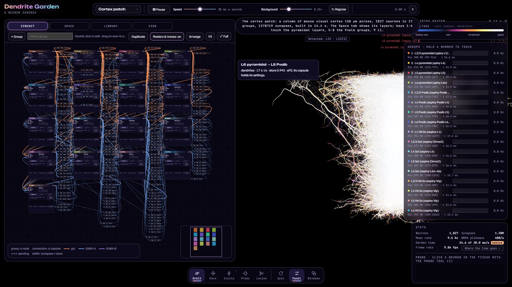
The keys
| O | Orbit: drag turns the tissue, right-drag pans, scroll zooms |
| M | Move a region |
| S | The brush |
| I | Probe |
| L | Lesion |
| R | Spin the camera, and stop it |
| Space | Pause, and run |
| N | The Circuit tab |
| F | The graph full-screen, and back |
| H | Hide the panel and windows, and show them |
| 1–9 held | Touch a group |
| Esc | Close a menu |
Sources
The published work the garden's numbers, forms and data rest on. Each entry says what in the garden rests on it.
The channels
- Colbert CM, Pan E (2002). Ion channel properties underlying axonal action potential initiation in pyramidal neurons. Nature Neuroscience 5(6), 533–538. The sodium channel type.
- Korngreen A, Sakmann B (2000). Voltage-gated K+ channels in layer 5 neocortical pyramidal neurones from young rats: subtypes and gradients. Journal of Physiology 525.3, 621–639. The slow potassium channel type.
- Guan D, Higgs MH, Horton LR, Spain WJ, Foehring RC (2011). Contributions of Kv7-mediated potassium current to sub- and suprathreshold responses of rat layer II/III neocortical pyramidal neurons. Journal of Neurophysiology 106, 1722–1733. The M-current channel type.
- Almog M, Korngreen A (2009). Characterization of voltage-gated Ca2+ conductances in layer 5 neocortical pyramidal neurons from rats. PLoS ONE 4(4), e4841. The two high-voltage-activated calcium types.
- Hirschberg B, Maylie J, Adelman JP, Marrion NV (1998). Gating of recombinant small-conductance Ca-activated K+ channels by calcium. Journal of General Physiology 111, 565–581. The SK channel type, opened by calcium.
- Hay E, Hill S, Schürmann F, Markram H, Segev I (2011). Models of neocortical layer 5b pyramidal cells capturing a wide range of dendritic and perisomatic active properties. PLoS Computational Biology 7(7), e1002107. The sodium and slow potassium types' Q10 and the potassium reversal.
- Kole MHP, Ilschner SU, Kampa BM, Williams SR, Ruben PC, Stuart GJ (2008). Action potential generation requires a high sodium channel density in the axon initial segment. Nature Neuroscience 11(2), 178–186. The axon start's length.
- Hu W, Tian C, Li T, Yang M, Hou H, Shu Y (2009). Distinct contributions of Nav1.6 and Nav1.2 in action potential initiation and backpropagation. Nature Neuroscience 12(8), 996–1004. The axon start's diameter.
The calcium inside the cells
- Helmchen F, Imoto K, Sakmann B (1996). Ca2+ buffering and action potential-evoked Ca2+ signaling in dendrites of pyramidal neurons. Biophysical Journal 70, 1069–1081. The buffered calcium in each compartment: its resting level, the buffers' capacity and how fast it clears.
- Neher E, Augustine GJ (1992). Calcium gradients and buffers in bovine chromaffin cells. Journal of Physiology 450, 273–301. The buffered single compartment the calcium follows.
- Markram H, Helm PJ, Sakmann B (1995). Dendritic calcium transients evoked by single back-propagating action potentials in rat neocortical pyramidal neurons. Journal of Physiology 485.1, 1–20. The calcium's clearing shared between the membrane's pumps and the internal stores, and its temperature dependence.
The synapses
- Markram H, Wang Y, Tsodyks M (1998). Differential signaling via the same axon of neocortical pyramidal neurons. Proceedings of the National Academy of Sciences USA 95, 5323–5328. Synapse classes' short-term dynamics, and the form of the short-term plasticity.
- Natschläger T, Maass W (2001). Computing the optimally fitted spike train for a synapse. Neural Computation 13, 2477–2494. The form in which the short-term plasticity is computed.
- Wang Y, Markram H, Goodman PH, Berger TK, Ma J, Goldman-Rakic PS (2006). Heterogeneity in the pyramidal network of the medial prefrontal cortex. Nature Neuroscience 9(4), 534–542. Excitatory synapse classes' short-term dynamics.
- Gupta A, Wang Y, Markram H (2000). Organizing principles for a diversity of GABAergic interneurons and synapses in the neocortex. Science 287, 273–278. Inhibitory synapse classes' short-term dynamics.
- Markram H, Muller E, Ramaswamy S, Reimann MW, et al. (2015). Reconstruction and simulation of neocortical microcircuitry. Cell 163, 456–492. A synapse class's short-term dynamics, and how the release fraction follows the calcium outside the cells.
- Rozov A, Burnashev N, Sakmann B, Neher E (2001). Transmitter release modulation by intracellular Ca2+ buffers in facilitating and depressing nerve terminals of pyramidal cells in layer 2/3 of the rat neocortex indicates a target cell-specific difference in presynaptic calcium dynamics. Journal of Physiology 531.3, 807–826. How the release fraction follows the calcium outside the cells.
- Tamás G, Lőrincz A, Simon A, Szabadics J (2003). Identified sources and targets of slow inhibition in the neocortex. Science 299, 1902–1905. The GABA-B synapse class.
- Pala A, Petersen CCH (2015). In vivo measurement of cell-type-specific synaptic connectivity and synaptic transmission in layer 2/3 mouse barrel cortex. Neuron 85, 68–75. The class of excitatory synapses onto fast-spiking interneurons.
The axons
- Hirsch JA, Gilbert CD (1991). Synaptic physiology of horizontal connections in the cat's visual cortex. Journal of Neuroscience 11(6), 1800–1809. The fibres' conduction speed.
- Salami M, Itami C, Tsumoto T, Kimura F (2003). Change of conduction velocity by regional myelination yields constant latency irrespective of distance between thalamus and cortex. Proceedings of the National Academy of Sciences USA 100(10), 6174–6179. The fibres' conduction speed.
The background
- Destexhe A, Paré D (1999). Impact of network activity on the integrative properties of neocortical pyramidal neurons in vivo. Journal of Neurophysiology 81, 1531–1547. The background's contacts, its rates, and how its events spread over the soma and dendrites.
- Destexhe A, Rudolph M, Fellous J-M, Sejnowski TJ (2001). Fluctuating synaptic conductances recreate in vivo-like activity in neocortical neurons. Neuroscience 107(1), 13–24. The background's contacts, its events' size and their correlation.
The cortex patch and the data
- Billeh YN, Cai B, Gratiy SL, et al. (2020). Systematic integration of structural and functional data into multi-scale models of mouse primary visual cortex. Neuron 106, 388–403. The cortex patch: its groups and their densities, its connections and their probabilities, where they land and their strengths, and L4's depth.
- Campagnola L, Seeman SC, Chartrand T, et al. (2022). Local connectivity and synaptic dynamics in mouse and human neocortex. Science 375(6585), eabj5861. The paper of the Synaptic Physiology dataset below.
- Allen Institute for Brain Science. Synaptic Physiology dataset, release 2.1. The cortex patch's other layers' thicknesses, and the short-term dynamics its synapse classes are checked against. Its primary publication is entry 25, cited with it as the Allen Institute's citation policy asks.
- Allen Institute for Brain Science. Allen Cell Types Database: mouse neuron reconstructions. The 20 morphologies every neuron's tree is grown from.